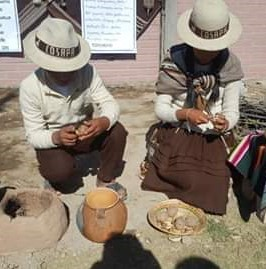
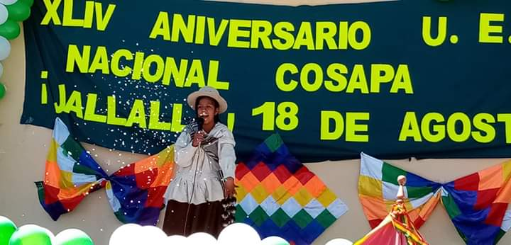

__________________________________________________________________________________
__________________________________________________________________________________
PRESENTACION
La educación llego a cosapa en 1947 con el nombre de escuela campesina de cosapa (nivel primario) con 25 estudiantes dependientes de turco. Un 22 de abril de 1960 ya fue un núcleo escolar campesino de cosapa. En fecha 15 de mayo de 1975 se abrió el ciclo intermedio y nivel medio porque ya contaba con la cantidad necesaria exactamente de 204 estudiantes. El director de aquel entonces Darío Molina conjuntamente con estudiantes y docentes decidieron cambiar el nombre a “Toribio Claure Montaño”. La primera promoción graduada fue la de la gestión 1995 con 14 estudiantes. Y con la gestion de anteriores autoridades originarias, directores, juntas escolares y demas personas de la comunidad hoy en dia se la conoce con el nombre de NACIONAL COSAPA es una institucion publica, con la labor de brindar educacion a todo joven, señorita dispuesto a obtener conocimiento.
________________________________________________________MAS DE 40 AÑOS VIVIENDO POR Y PARA LA EDUCACION_________________________________________________________

Con mucho esfuerzo y dedicacion
a lo largo de los años se ha ido mejorando tanto la educacion como la infraestructura, ademas que desde la gestion 2018 se cuenta con un bachillerato tecnico en sistemas informaticos
_______________________________________________________________________NUESTRA MISION__________________________________________________________________
En lo referente a nuestra labor con los alumnos y alumnas, a lo largo de su educacion nostros queremos que alcancen el pleno desarrollo de su personalidad en todos los aspectos de su vida tanto personal como social.
Al mismo tiempo, trabajamos para formarlos en el marco del respeto de los derechos y libertades fundamentales en el ejercicio de la tolerancia dentro de los principios democraticos de convivencia, tambien buscamos la preparacion de los estudiantes para su participacion activa y responsable en la vida social y cultural de su entorno.
Ademas trabajamos para desarrollar un espiritu cooperativo y solidario, aprendiendo a resolver sus diferencias mediante el dialogo como punto de partida para su formacion integral.

_____________________________________________________________________COMUNIDAD EDUCATIVA_________________________________________________________________
|
|
ORGANIZACION
- DIRECTOR
- JUNTAS ESCOLARES
- PPFF
- ESTUDIANTES
AREAS DE EDUCACION 1ro-3ro
- MATEMATICA
- LENGUAJE
- CIENCIAS NATURALES
- CIENCIAS SOCIALES
- ARTES PLASTICAS
- MUSICA
- EDUCACION FISICA Y RECREACION
- RELIGION
- INGLES
- TECNICA VOCACIONAL
- FILOSOFIA
AREAS DE EDUCACION 4to-6to
- LENGUAJE
- MATEMATICA
- CIVICA
- GEOGRAFIA
- HISTORIA
- BIOLOGIA
- FISICA
- QUIMICA
- PSICOLOGIA
- MUSICA
- EDUCACION FISICA Y RECREACION
- TECNICA ESPECIALIZADA
- RELIGION
- ARTES PLASTICAS
- INGLES